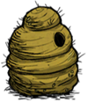
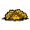
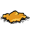
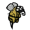
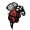
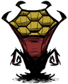

| Beehive | |
|  |
|
| Health | 200 |
| Resources |  |
| Spawns |  |
| Renewable? | No |
| Common Biomes | Grassland |
| DebugSpawn | "beehive" |
| Killer Bee Hive | |
|  |
|
| Health | 250 |
| Resources | |
| Spawns | |
| Renewable? | No |
| Common Biomes | Grassland |
| DebugSpawn | "wasphive" |
| “ | Not the bees! | ” |
| –Maxwell | ||
Beehives are naturally occurring structures only found in Grassland Biomes, holding up to 6 Bees or Killer Bees. They cannot be harvested, so the only way to get to the Honey and Honeycombs inside is to destroy them. They have 200 health, and each drops 3 Honey and 1 Honeycomb upon destruction. Unlike Bee Boxes, worker bee activities have no effect on the amount of Honey dropped. Because beehives do not respawn, this makes the Honeycombs used to make Bee Boxes a finite resource.
Killer Bee Hives are naturally occurring structures only found in Grassland biomes - usually next to Beehives - holding up to 6 Killer Bees. They appear in both Adventure and Sandbox Mode, but more frequently in Adventure Mode. Even though they don't house worker Bees and can not be harvested, when destroyed they still drop 3 Honey and 1 Honeycomb. Because they do not respawn, the Honeycombs used to make Bee Boxes are a finite resource.
A Beehive will (re)spawn a new bee every game hour (30 seconds) up to the maximum population of 6 per hive. All bees will return to their hive at dusk, but they will leave it during daytime one at a time every 50 seconds. During Winter workers will not leave the hive.
Technically bees don't have a fixed role. Instead the same specimen can act as a worker or a fighter depending on what the current situation calls for. Every time a bee leaves the hive the game assigns it a role and every time it returns that role gets erased. So the same specimen can fight off a threat as a Killer Bee, enter the hive and re-emerge as a worker to gather pollen. Thus Killer Bees don't compete with workers for living space as they are essentially the same thing, similar to the way a Spider may emerge as a normal spider or a Spider Warrior.
If a Bee is attacked all members of the hive still inside will emerge immediately as Killer Bees and engage. Additionally all surrounding bees less than about a screen away - killer or otherwise - belonging to the same hive and any hiveless bees will also join the fight. The combined number of attackers coming to help can not exceed 10 unless the player attacks another bee.
When attacking their home, all remaining bees in the Beehive will emerge as Killer Bees and attack while those that were already outside will ignore the threat unless the player fights back. This makes attacking a Beehive the safest right before dusk; the last worker will leave 8.3 game hours (250 seconds) into the day but usually dusk comes before this can happen.
As a special case if a Beehive catches Fire, all bees will swarm out as workers but stay neutral because they don't recognize the player as a threat even if it was a direct attack from a Fire Dart for example. The Hive will burn up, dropping some Ash.
A Killer Bee Hive will (re)spawn a new bee every 20 seconds up to the maximum population of 6 per hive. Killer Bees normally stay inside their hive all day. If the player wanders too close to their home they will immediately swarm out and attack even at Night and during Winter. Other creatures do not trigger this behaviour.
If a Killer Bee is attacked all members of the hive still inside will emerge immediately and engage. Additionally all surrounding bees less than about a screen away belonging to the same hive and any hiveless bees - killer or otherwise - will also join the fight. The combined number of attackers coming to help can not exceed 10 unless the player attacks another bee.
When attacking their home, all remaining bees in the Killer Bee Hive will emerge and attack. While this rarely happens in practice, technically any member stuck outside at the moment of the attack will ignore this new threat and continue their normal behaviour unless the player fights back.
As a special case if a Killer Bee Hive catches Fire, all bees will swarm out but stay neutral if the player keeps his distance because they don't recognize the threat even if it was a direct attack from a Fire Dart for example. The hive will burn up, dropping some Ash.
Equipping a Beekeeper Hat is a good way of avoiding major damage. If combined with a Log Suit, the damage from Bee stings is nearly negated and gathering is much easier.
It is possible to outrun Bees as they fly slowly. Once attacking a Hive,a character can turn and run from the bees, then turn back and attack again before they catch up.
Wendy can also use Abigail to harvest Honey. Head to a beehive with a rabbit or bird in the inventory, drop the red flower and the critter, and kill the creature before it flees. Abigail will spawn and help attack and destroy the beehive once Wendy targets it. It will anger the bees, but they will attack Abigail instead.
It is advised that players should stay away from Killer Bee Hives, because they are often found grouped with other hives, making it hard to escape without attracting more Killer Bees.
Destroying a Killer Bee Hive requires good preparation. The player should have armour such as a Beekeeper Hat and Log Suit for minimizing injury. To destroy each hive quickly, one should use a Tentacle Spike or Dark Sword, though the run-of-the-mill Spear works as well.
Ranged weapons such as a Blow Dart will help the player keep a safe distance while killing the bees.
A strategy is to lure away the Killer Bees and turn back in a circle. When they stop pursuing, they wait for a short while before returning to the hive, giving the player time to destroy it before the bees catch up. After the hive is destroyed, the bees don't act as a swarm anymore and can be killed one by one.
A patient player may employ a Lureplant to eat the bees. Lure them into the field of Eyeplants by going around the Eyeplants, and return to destroy the hive. This works with a lot of Killer Bee Hives close together.
Another mildly entertaining strategy to farm Pengulls, albeit mildly dangerous, is to find a Killer Bee Hive and wait for Pengulls to spawn nearby. Once a sizable amount have made there way to a close by location, proc the Killer Bees] to chase you, then kite them over to the Pengulls, get out of range of the bees, watch the carnage, this will get you Honey, a lot of Stinger, and plenty of Drumsticks, Jet Feathers, and Eggs. Plus this can be done daily and repeatedly as the bees will replenish in about a game days time, as well as the Pengulls.
")
| Naturally spawning world objects | |
| Plants | Berry Bush • Carrot • Cave Banana Tree • Cave Lichen • Flower (Evil Flower, Fern) • Grass • Light Flower • Lureplant • Mandrake • Mushrooms • Mushtree • Plant • Reeds • Sapling • Spiky Bush • Tree • Totally Normal Tree |
| Mobs and Mob Housing | Beehive • Hound Mound • Pond • Pig Fortress • Pig House • Pig King • Pig Torch • Rabbit Hutch • Rundown House • Slurtle Mound • Spider Den • Spilagmite • Splumonkey Pod • Tallbird Nest • Walrus Camp • Worm Hole |
| Inanimate | Ancient Pseudoscience Station • Ancient Statue • Basalt • Boulder • Gramaphone • Grave • Harp Statue • Headstone • Suspicious Dirt Pile • Marble Pillar • Marble Tree • Maxwell's Door • Maxwell Statue • Maxwell's Light • Merm Head • Nightmare Light • Nightmare Lock • Nightmare Throne • Obelisk • Ornate Chest • Pig Head • Pillars • Relic • Sinkhole • Skeleton • Stalagmite • Touch Stone • Thulecite Wall |
| Things | Box Thing • Crank Thing • Eye Bone • Metal Potato Thing • Ring Thing • Wooden Thing |
{kind=link}
{kind=link}
{kind=link}
{kind=link}
{kind=link}
{kind=link}